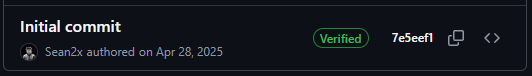
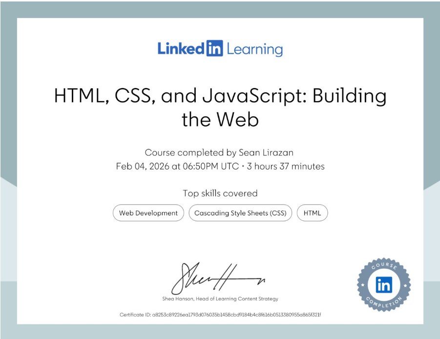

Personal Website
My home base — built from zero web experience into the place where everything I make now lives.
- Timeline
- April 2025 – September 2026
- Role
- Designer, Developer, Tester
- Tools
- HTML, CSS, JavaScript, Git, GitHub
- Status
- Complete
The spark
I was creating so many things that I eventually ran into a stupid problem:
I had nowhere to put them.
I wanted a place where someone could visit and immediately get a glimpse into my world — what I build, what I'm learning, what I care about, and what I'm currently doing.
So I decided to build my own website. Not just a portfolio. A home base.
The goal
Create a simple personal website that could:
- Show people who I am
- Showcase my projects
- Share videos and things I'm creating
- Keep track of events and things I'm doing
- Provide a way to contact me
- Be simple enough for a first-time coder to actually build
- Be expandable as I learned more
The goal wasn't to make the world's most impressive website.
It was to make something exist. Then make it good.
The journey
-
Phase 1
Learning the pieces
The website became my first real front-end project. I started with essentially no web development experience.
I completed LinkedIn Learning certifications in HTML, CSS, and JavaScript — then started putting those pieces together, along with:
- Git and GitHub
- Basic UX/UI design
- Responsive design
- Website architecture — structuring a site so it can grow without becoming a mess

Where it started: the site's first commit, April 28, 2025. 
LinkedIn Learning — HTML, CSS, and JavaScript: Building the Web. -
Phase 2
Making it feel good
The first versions were functional. They weren't particularly pretty.
So I started learning how to make interfaces actually feel good. Around 10 friends and test users interacted with the site and gave me feedback, which I used to improve:
- Navigation
- Layout
- Visual hierarchy
- Responsiveness
- Readability
- Interaction
- Overall UX
-
Phase 3
Probably too ambitious
I also challenged myself with ideas that were probably way too ambitious for a first website — at one point I wanted a 3D interactive Matrix-style experience.
That was probably a little ridiculous. But it taught me something useful.
What I learned
This project taught me much more than HTML and CSS. I learned how to think about a website as a system.
A good website isn't just a collection of pages. It's an experience. I learned how to:
- Structure a growing website
- Separate content from presentation
- Design around the person using it
- Iterate based on real feedback
- Build interfaces that are clean without being boring
- Create something expandable instead of constantly rebuilding it
- Use Git and GitHub as part of an actual development workflow
Most importantly, I learned that shipping beats planning forever.
What this became
The website is now the home base for everything else I build. Future projects, videos, experiments, and interesting web applications can all live here.
Instead of asking “Where should I put this?” I now have an answer.
Here.
What's next
Use the website as the central hub for:
- Engineering projects
- Games
- Web experiments
- Videos
- Events
- Things I'm learning
- Whatever weird thing I build next